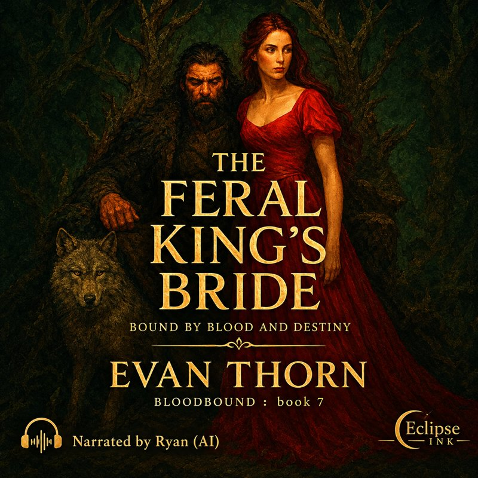

The Feral King's Bride
Available on itch.io
Get the audiobookWhen the council decrees that a bride must be sent to the untamed Wildlands to secure peace, Elyra Mosswind steps forward, believing diplomacy can tame even the wildest hearts. She is unprepared for King Rykar - a man both feared and fabled - whose feral strength and primal magic surpass any legend.
From the moment Elyra enters his realm, she is marked by Rykar as his queen. The forest itself seems to respond to his fury, ancient creatures stirring at his command. Savage and cunning, Rykar challenges everything Elyra believes about power, love, and control. Yet beneath the feral exterior lies a man bound by loyalty, haunted by the echoes of a violent past, and fiercely protective of what is his.
As monstrous threats rise from the heart of the Wildlands, Elyra must navigate a perilous dance of trust, desire, and survival. Every choice carries a price, every bond demands sacrifice, and every heartbeat could be the one that seals her fate.
In the shadow of towering trees, amidst the whispering wilds and relentless magic, a dangerous romance blooms. Elyra discovers that courage is not the absence of fear, but the will to confront the impossible - and that some bonds, written in blood and destiny, cannot be broken.
Blood, passion, and ancient magic collide in this darkly romantic tale of survival, loyalty, and the transformative power of love. Will Elyra bend the wild king to her will - or will she surrender to the untamable fire that binds them both?
Perfect for fans of dark fantasy romance, feral kings, and magical, blood-bound love stories, Bloodbound: The Feral King's Bride is the seventh thrilling installment in Evan Thorn's epic THE BLOODBOUND NINE series.